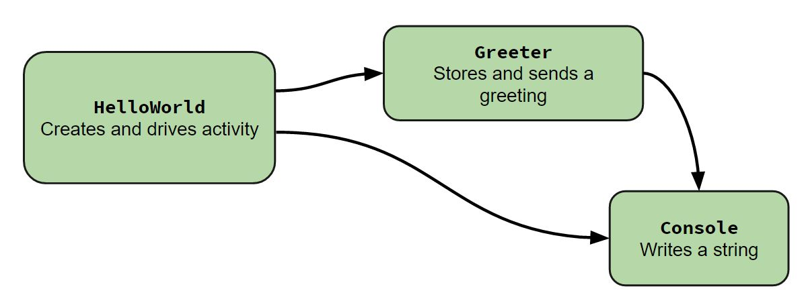

@PaniniJ
Getting Started Manual
Hello World Example
This hello world example has three capsules:
In this example, we have three capsules, the first is a passive capsule named Console, the second is a passive capsule named Greeter and the third is an active capsule called HelloWorld. The active capsule HelloWorld holds a connection to the passive capsules Greeter and Console in order to call on its procedures. This connection is set up by the @Local annotation on the Greeter and Console field of the HelloWorldTemplate.
The capsule Greeter has a field of type Console that is annotated with the @Imports. This means that the Greeter wants to call procedures of a Console capsule, but does not want to create the instance of the capsule. By using @Imports, it specifies that the parent capsule of the Greeter must supply the reference to the Console capsule. This is shown in the HelloWorldTemplate in the design method where g.imports is called and the reference to the Console capsule is passed as a parameter.